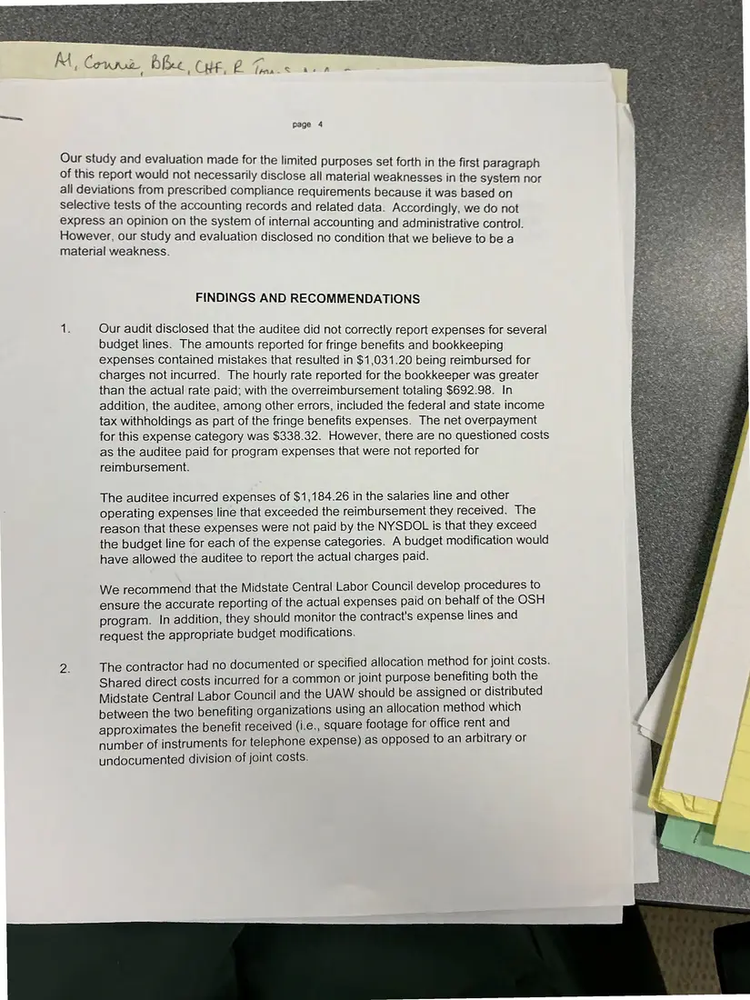
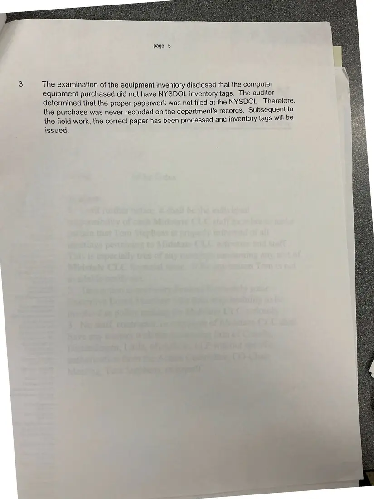

Report, 2 pages
New York State Department of Labor audit findings (pages 4–5)
[1998–1999]Date inferred
The findings and recommendations section of a state audit of the council's grant program, covering reporting of fringe benefits and bookkeeping, unreported salary expenses, allocation of shared costs with the UAW, and equipment inventory tags.
Only pages 4–5 were photographed.
Download or cite this itemPages


(open zoom view)Read the page text (machine-read, mostly readable)
This text was generated automatically from the photograph and has not been corrected. The image is the authoritative record.
page 4 Our study and evaluation made for the limited purposes set forth in the first paragraph of this report would not necessarily disclose all material weaknesses in the system nor all deviations from prescribed compliance requirements because it was based on selective tests of the accounting records and related data. Accordingly, we do not express an opinion on the system of internal accounting and administrative control. However, our study and evaluation disclosed no condition that we believe to be a material weakness. FINDINGS AND RECOMMENDATIONS te Our audit disclosed that the auditee did not correctly report expenses for several budget lines. The amounts reported for fringe benefits and bookkeeping expenses contained mistakes that resulted in $1,031.20 being reimbursed for charges not incurred. The hourly rate reported for the bookkeeper was greater than the actual rate paid; with the overreimbursement totaling $692.98. In addition, the auditee, among other errors, included the federal and state income tax withholdings as part of the fringe benefits expenses. The net overpayment for this expense category was $338.32. However, there are no questioned costs as the auditee paid for program expenses that were not reported for reimbursement. The auditee incurred expenses of $1,184.26 in the salaries line and other operating expenses line that exceeded the reimbursement they received. The reason that these expenses were not paid by the NYSDOL is that they exceed the budget line for each of the expense categories. A budget modification would have allowed the auditee to report the actual charges paid. We recommend that the Midstate Central Labor Council develop procedures to ensure the accurate reporting of the actual expenses paid on behalf of the OSH program. In addition, they should monitor the contract's expense lines and request the appropriate budget modifications. Ze The contractor had no documented or specified allocation method for joint costs. Shared direct costs incurred for a common or joint purpose benefiting both the Midstate Central Labor Council and the UAW should be assigned or distributed between the two benefiting organizations using an allocation method which approximates the benefit received (i.e., square footage for office rent and number of instruments for telephone expense) as opposed to an arbitrary or undocumented division of joint costs.


(open zoom view)Read the page text (machine-read, mostly readable)
This text was generated automatically from the photograph and has not been corrected. The image is the authoritative record.
The examination of the equipment inventory disclosed that the computer equipment purchased did not have NYSDOL inventory tags. The auditor determined that the proper paperwork was not filed at the NYSDOL. Therefore, the purchase was never recorded on the department's records. Subsequent to the field work, the correct paper has been processed and inventory tags will be issued.
See something wrong, or recognize a person or event? Send a correction. If you hold rights in this item or think it should not be public, write to the same address.